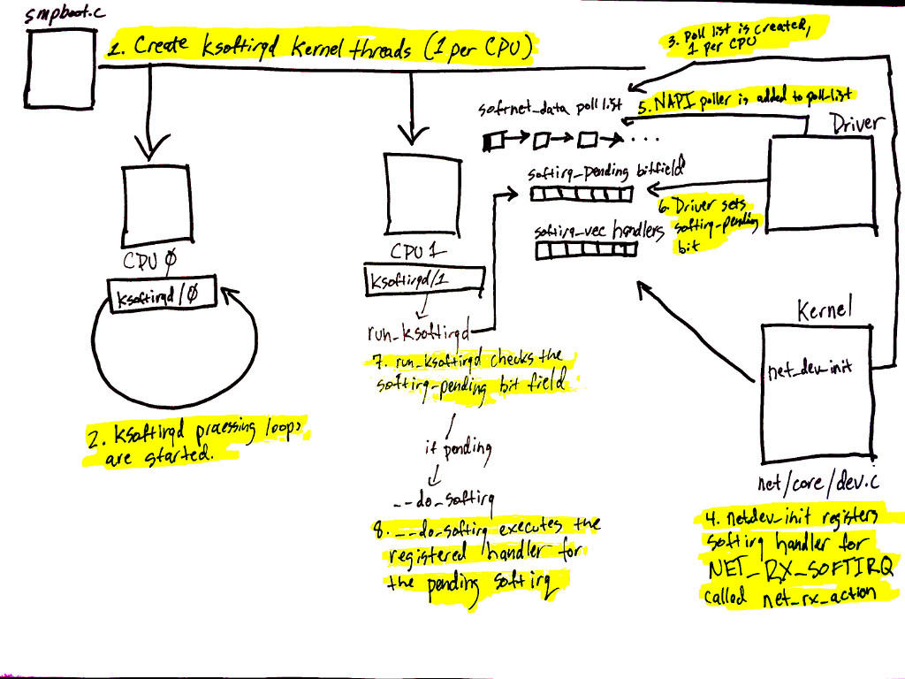
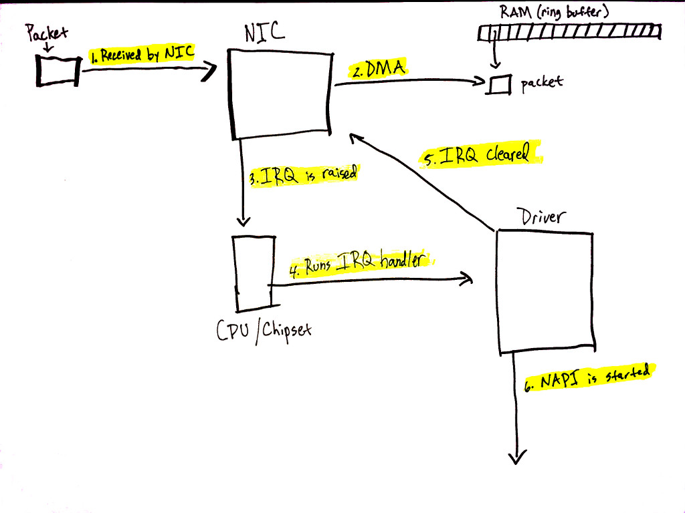
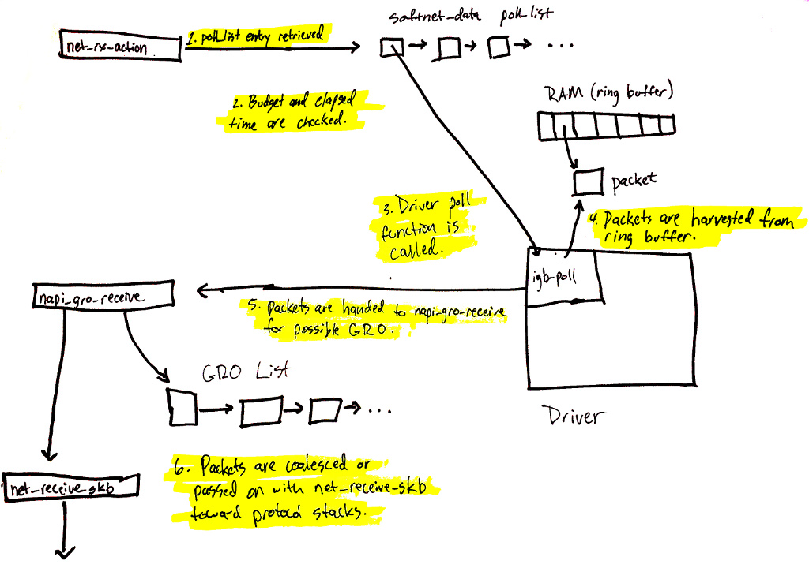
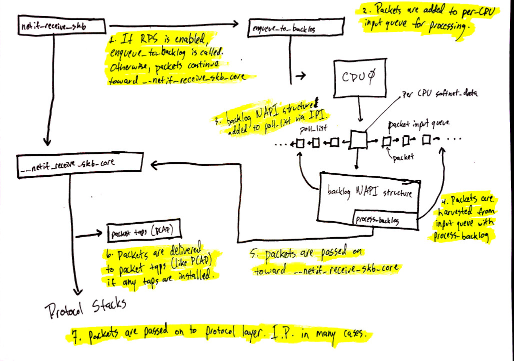

2 Getting started
These diagrams are intended to give an overview of how the Linux network stack works. The purpose of these drawings is to help readers form a mental model of how some of the systems in the kernel interact with each other at a high-level.
Let’s begin by taking a look at some important initial setup that is necessary before packet processing can be understood.
3 Initial setup

Devices have many ways of alerting the rest of the computer system that some work is ready for processing. In the case of network devices, it is common for the NIC to raise an IRQ to signal that a packet has arrived and is ready to be processed. When an IRQ handler is executed by the Linux kernel, it runs at a very, very high priority and often blocks additional IRQs from being generated. As such, IRQ handlers in device drivers must execute as quickly as possible and defer all long running work to execute outside of this context. This is why the “softIRQ” system exists.
Notes: 驱动中的中断处理函数必须尽快的执行完，避免Block整个系统对其他 中断的处理。 其他比较耗时的任务交给“软中断”去处理（下半部机制）。
The “softIRQ” system in the Linux kernel is a system that kernel uses to process work outside of the device driver IRQ context. In the case of network devices, the softIRQ system is responsible for processing incoming packets. The softIRQ system is initialized early during the boot process of the kernel.
Notes： 处理接收数据的主要逻辑是在软中断中执行的。
The diagram shows the initializing of the softIRQ system and its per-CPU kernel threads.
The initialization of the softIRQ system is as follows:
- softIRQ kernel threads are created (one per CPU) in
spawn_ksoftirqdin kernel/softirq.c with a call tosmpboot_register_percpu_threadfrom kernel/smpboot.c. As seen in the code, the functionrun_ksoftirqdis listed asthread_fn, which is the function that will be executed in a loop. - The ksoftirqd threads begin executing their processing loops in
the
run_ksoftirqdfunction. - Next, the
softnet_datastructures are created, one per CPU. These structures hold references to important data structures for processing network data. One we’ll see again is thepoll_list. Thepoll_listis where NAPI poll worker structures will be added by calls tonapi_scheduleor other NAPI APIs from device drivers. net_dev_initthen registers theNET_RX_SOFTIRQsoftirq with the softirq system by callingopen_softirq, as shown here. The handler function that is registered is callednet_rx_action. This is the function the softirq kernel threads will execute to process packets.
提示
NOTES: 当驱动收到中断通知新接收的数据到来时，它会立即执行必要的动作，
然后调用 napi_schedule 交给Linux内核处理。 net_rx_action 是内核
处理接收到的数据的入口。
Steps 5 - 8 on the diagram relate to the arrival of data for processing and will be mentioned in the next section. Read on for more!
4 Data arrives

Data arrives from the network!
When network data arrives at a NIC, the NIC will use DMA to write
the packet data to RAM. In the case of the igb network driver, a
ring buffer is setup in RAM that points to received packets. It is
important to note that some NICs are “multiqueue” NICs, meaning
that they can DMA incoming packets to one of many ring buffers in
RAM. As we’ll see soon, such NICs are able to make use of multiple
processors for processing incoming network data. The diagram above
shows just a single ring buffer for simplicity, but depending on the
NIC you are using and your hardware settings you may have multiple
queues on your system.
Let’s walk through the process of receiving data:
- Data is received by the NIC from the network.
- The NIC uses DMA to write the network data to RAM.
- The NIC raises an IRQ.
- The device driver’s registered IRQ handler is executed.
- The IRQ is cleared on the NIC, so that it can generate IRQs for new packet arrivals.
- NAPI softIRQ poll loop is started with a call to
napi_schedule.
The call to napi_schedule triggers the start of steps 5 - 8 in the
previous diagram. As we’ll see, the NAPI softIRQ poll loop is started
by simply flipping a bit in a bitfield and adding a structure to the
poll_list for processing. No other work is done by napi_schedule and
this is precisely how a driver defers processing to the softIRQ
system.
Continuing on to the diagram in the previous section, using the numbers found there:
- (5)The call to
napi_schedulein the driver adds the driver's NAPI poll structure to thepoll_listfor the current CPU. - (6)The softirq pending bit is set so that the
ksoftirqdprocess on this CPU knows that there are packets to process. - (7)
run_ksoftirqdfunction (which is being run in a loop by the ksoftirq kernel thread) executes. - (8)
__do_softirqis called which checks the pending bitfield, sees that a softIRQ is pending, and calls the handler registered for the pending softIRQ:net_rx_actionwhich does all the heavy lifting for incoming network data processing.
It is important to note that the softIRQ kernel thread is executing
net_rx_action, not the device driver IRQ handler.
5 Network data processing begins

Now, data processing begins. The net_rx_action function (called from
the ksoftirqd kernel thread) will start to process any NAPI poll
structures that have been added to the poll_list for the current
CPU. Poll structures are added in two general cases:
- From device drivers with calls to
napi_schedule. - With an Inter-processor Interrupt in the case of Receive Packet Steering.
We’re going to start by walking through what happens when a
driver’s NAPI structure is retreived from the poll_list.
The diagram above can be summarized as follows:
net_rx_actionloop starts by checking the NAPI poll list for NAPI structures.- The
budgetand elapsed time are checked to ensure that the softIRQ will not monopolize CPU time. - The registered poll function is called. In this case, the
function
igb_pollwas registered by the igb driver. - The driver’s
pollfunction harvests packets from the ring buffer in RAM. - Packets are handed over to
napi_gro_receive, which will deal with possible Generic Receive Offloading.GRO是什么？
Generic Receive Offloading (GRO) is a software implementation of a hardware optimization that is known as Large Receive Offloading (LRO), (把小数据包组成大的数据再往协议栈层去送)
- Packets are either held for GRO and the call chain ends here or
packets are passed on to
net_receive_skbto proceed up toward the protocol stacks.
We’ll see next how netreceiveskb deals with Receive Packet steering to distribute the packet processing load amongst multiple CPUs.
6 Network data processing continues

Network data processing continues from netif_receive_skb, but the
path of the data depends on whether or not Receive Packet Steering
(RPS) is enabled or not. An “out of the box” Linux kernel will not
have RPS enabled by default and it will need to be explicitly
enabled and configured if you want to use it.
In the case where RPS is disabled, using the numbers in the above diagram:
- (1)
netif_receive_skbpasses the data on to__netif_receive_core. - (6)
__netif_receive_coredelivers data to any taps (like PCAP). - (7)
__netif_receive_coredelivers data to registered protocol layer handlers. In many cases, this would be theip_rcvfunction that the IPv4 protocol stack has registered.In the case where RPS is enabled:
netif_receive_skbpasses the data on toenqueue_to_backlog.- Packets are placed on a per-CPU input queue for processing.
- The remote CPU’s NAPI structure is added to that CPU’s
poll_listand an IPI is queued which will trigger the softIRQ kernel thread on the remote CPU to wake-up if it is not running already. - When the ksoftirqd kernel thread on the remote CPU runs, it
follows the same pattern describe in the previous section, but
this time, the registered poll function is
process_backlogwhich harvests packets from the current CPU’s input queue. - Packets are passed on toward
__net_receive_skb_core. __netif_receive_coredelivers data to any taps (like PCAP).__netif_receive_coredelivers data to registered protocol layer handlers. In many cases, this would be theip_rcvfunction that the IPv4 protocol stack has registered.
7 Protocol stacks and userland sockets
Next up are the protocol stacks, netfilter, berkley packet filters, and finally the userland socket. This code path is long, but linear and relatively straightforward.
You can continue following the detailed path for network data. A very brief, high level summary of the path is:
- Packets are received by the IPv4 protocol layer with
ip_rcv. - Netfilter and a routing optimization are performed.
- Data destined for the current system is delivered to higher-level protocol layers, like UDP.
- Packets are received by the UDP protocol layer with
udp_rcvand are queued to the receive buffer of a userland socket byudp_queue_rcv_skbandsock_queue_rcv. Prior to queuing to the receive buffer, berkeley packet filters are processed.
Note that netfilter is consulted multiple times throughout this process.
8 Conclusion
The Linux network stack is incredibly complex and has many different systems interacting together. Any effort to tune or monitor these complex systems must strive to understand the interation between all of them and how changing settings in one system will affect others.